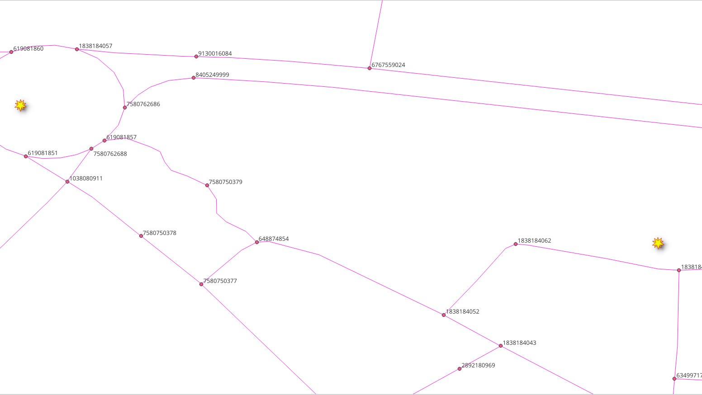
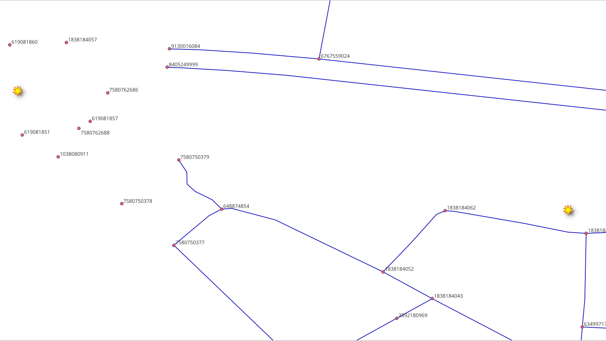

6. Función pl/pgsql¶

Otro tipo de funciones son pl/pgsql. A medida que los requisitos de las aplicaciones se vuelven más complejos, el uso de contenedores de funciones previamente definidas se hace necesario para mayor claridad.
6.1. Requisitos para el ruteo de A a B¶
Problema del capítulo:
Cree una función
wrk_fromAtoBque permita el ruteo desde 2 geometrías.La función toma los puntos de latitud/longitud como parámetros de entrada.
Devuelve una ruta que incluye una geometría para que si se puede desplegar, por ejemplo, en QGIS.
También devolverá algunos otros atributos.
La descripción detallada:
Parámetros de entrada
Columna |
tipo |
Descripción |
|---|---|---|
edges_subset |
REGCLASS |
Identificador de nombre de tabla perimetral. |
lat1 |
NUMERIC |
La latitud del punto de partida. |
lon1 |
NUMERIC |
La longitud del punto de partida. |
lat2 |
NUMERIC |
La latitud del punto de destino. |
lon2 |
NUMERIC |
La longitud del punto de destino. |
do_debug |
BOOLEAN |
Marcar para crear una |
Columnas de resultados
Columna |
Descripción |
|---|---|
|
Para fines ordenamiento. |
gid |
Identificador de bordes que se puede utilizar para unir los resultados a la tabla |
|
El nombre de la calle. |
|
Entre el nodo inicial y final de una arista. |
|
En metros. |
minutos |
Minutos tomados para atravesar el segmento. |
|
La geometría de la carretera con direccionalidad corregida. |
Para este capítulo, se utilizarán los siguientes puntos para las pruebas.
(lat,lon) = (-1.455829, -48.446044)
(lat,lon) = (-1.453448, -48.447142)
6.2. La Tabla de Vértices¶
Los grafos tienen un conjunto de aristas y un conjunto de vértices asociados a él. Las vistas necesitan su tabla de vértices.
6.2.1. Ejercicio 1: Crear la tabla de vértices¶
Problema
Crear una tabla de vértices:
``vehicle_net`
taxi_netwalk_net
Solución
Utilizar
pgr_extractVertices(explicado en Vistas de gráficos) para crear la tabla de vérticesJOINla tabla de vértices conways_vertices(creada en Vistas de gráficos) para obtener la información dex,y,geom.
Para vehicle_net:
SELECT * INTO vehicle_net_vertices
FROM pgr_extractVertices(
'SELECT id, source, target
FROM vehicle_net ORDER BY id');
UPDATE vehicle_net_vertices AS v
SET (x,y,geom) = (w.x, w.y, w.geom)
FROM ways_vertices AS w WHERE v.id = w.id;
Para taxi_net:
SELECT * INTO taxi_net_vertices
FROM pgr_extractVertices(
'SELECT id, source, target
FROM taxi_net ORDER BY id');
UPDATE taxi_net_vertices AS v
SET (x,y,geom) = (w.x, w.y, w.geom)
FROM ways_vertices AS w WHERE v.id = w.id;
Para walk_net:
Modificar las consultas anteriores para crear la tabla walk_net_vertices.
SELECT * INTO walk_net_vertices
FROM pgr_extractVertices(
'SELECT id, source, target
FROM walk_net ORDER BY id');
UPDATE walk_net_vertices AS v
SET (x,y,geom) = (w.x, w.y, w.geom)
FROM ways_vertices AS w WHERE v.id = w.id;
Nota
Se deja al lector la tarea de eliminar los componentes desconectados en las vistas.
6.2.2. Ejercicio 3: Vértice más cercano¶
Problema
Calculer el identificador( OSM) del vértice más cercano a un punto.
En particular, utilizar el siguiente valor (lat,lon): (-1.455829, -48.446044).
calcular el identificador OSM más cercano del vértice a:
ways_verticesvehicle_net_verticestaxi_net_verticeswalk_net_vertices
Solución
Recordar que el
idtiene un identificador de vértice OSM en las tablas de vértices.Usando el operador de distancia <-> para ordenar por distancia.
Obtenga solo la primera fila para obtener el identificador más cercano del vértice.
Para ways_vertices:
SELECT id
FROM ways_vertices
ORDER BY geom <-> ST_SetSRID(ST_Point(-48.446044, -1.455829), 4326)
LIMIT 1;
id
------------
4834707721
(1 row)
Para``vehicle_net_vertices``:
Modificar la consulta anterior.
1SELECT id
2FROM vehicle_net_vertices
3ORDER BY geom <-> ST_SetSRID(ST_Point(-48.446044, -1.455829), 4326)
4LIMIT 1;
id
------------
4834707721
(1 row)
Para taxi_net_vertices:
Modificar la consulta anterior.
id
------------
6948263223
(1 row)
Para walk_net_vertices:
Modificar la consulta anterior.
id
------------
4834707721
(1 row)
6.2.3. Ejercicio 4: Función de vértice más cercano¶
Problema
Cuando las operaciones se ven similares para diferentes tablas, se puede crear una función.
Cree una función que calcule el identificador OSM del vértice más cercano a un punto.
Nombre de la función:
wrk_Nearest.Solo tiene que funcionar para las vistas y la tabla aplicación final.
Los parámetros de entrada:
Columna |
tipo |
Descripción |
|---|---|---|
vertex_table |
REGCLASS |
Identificador de nombre de tabla. |
lat |
NUMERIC |
La latitud de un punto. |
lon |
NUMERIC |
La longitud de un punto. |
La salida:
tipo |
Descripción |
|---|---|
BIGINT |
el identificador OSM más cercano a (lat,lon). |
Solución
La función devuelve sólo un valor
BIGINT.Usando format para construir la consulta.
La estructura de la consulta es similar a las soluciones Ejercicio 3: Vértice más cercano.
%1$Ipara el identificador de nombre de tabla.%2$sy%3$spara la latitud y longitud.El punto se forma con (lon/lat)
(%3$s, %2$s).
CREATE OR REPLACE FUNCTION wrk_Nearest(
IN vertex_table REGCLASS,
IN lat NUMERIC,
IN lon NUMERIC)
RETURNS BIGINT AS
$BODY$
DECLARE result BIGINT;
BEGIN
EXECUTE format(
$$
SELECT id
FROM %1$I
ORDER BY geom <-> ST_SetSRID(ST_Point(%3$s, %2$s), 4326)
LIMIT 1
$$,
vertex_table, lat, lon)
INTO result;
RETURN result;
END
$BODY$
LANGUAGE 'plpgsql';
6.2.4. Ejercicio 5: Prueba de la función vértice más cercano¶
 {kind=link}
{kind=link}

Problema
Probar la función
wrk_Nearest.
Usar los siguientes valores (lat,lon): (-1.455829, -48.446044).
El punto es el mismo que en Ejercicio 3: Vértice más cercano.
Compruebe que los resultados son los mismos.
calcular el identificador OSM más cercano del vértice a:
ways_verticesvehicle_net_verticestaxi_net_verticeswalk_net_vertices
Solución
Para ways_vertices:
Utilizar la función con
ways_verticescomo parámetro devertex_table.Pasar los valores (lat,lon) como segundo y tercer parámetro.
El uso de la función en los datos originales no devuelve el identificador de OSM.
El valor almacenado en la columna
idno es el identificador de OSM.
SELECT wrk_Nearest('ways_vertices', -1.455829, -48.446044);
wrk_nearest
-------------
4834707721
(1 row)
Para vehicles_net_vertices:
Modificar la consulta anterior.
SELECT wrk_Nearest('vehicle_net_vertices', -1.455829, -48.446044);
wrk_nearest
-------------
4834707721
(1 row)
Para taxi_net_vertices:
Modificar la consulta anterior.
wrk_nearest
-------------
6948263223
(1 row)
Para walk_net_vertices:
wrk_nearest
-------------
4834707721
(1 row)
6.3. función wrk_fromAtoB¶
En esta sección, se abordará la creación y prueba de la función requerida.
6.3.1. Ejercicio 6: Creación de la función principal¶
Problema
Crear la función
wrk_fromAtoB.Siga la descripción dada en Requisitos para el ruteo de A a B.
Utilizar funciones especializadas:
wrk_NearestOSMcreado en Ejercicio 4: Función de vértice más cercano.Recibe el punto en formato de lenguaje natural.
Obtiene el identificador OSM necesario por
wrk_dijkstra.
wrk_dijkstracreado en basic/sql_function:Exercise 6: Función para una aplicación.
Solución
Firma de la función:
Los parámetros de entrada están resaltados.
Las columnas de salida no están resaltadas.
La función devuelve un conjunto de valores.
CREATE OR REPLACE FUNCTION wrk_fromAtoB(
IN edges_subset REGCLASS,
IN lat1 NUMERIC, IN lon1 NUMERIC,
IN lat2 NUMERIC, IN lon2 NUMERIC,
IN do_debug BOOLEAN DEFAULT false,
OUT seq INTEGER,
OUT id BIGINT,
OUT seconds FLOAT,
OUT name TEXT,
OUT length_m FLOAT,
OUT route_readable TEXT,
OUT route_geom geometry,
OUT azimuth FLOAT
)
RETURNS SETOF record AS
Cuerpo de la función:
Llamada a la función wrk_dijkstra
Usando
formatde PostgreSQL para realizar sustitucionesEl primer parámetro es la cadena que debe ser sustituida
El resto son los parámetros de datos, son las cadenas para la sustitución.
wrk_dijkstraobtiene los valores para la salidaEl valor de
edges_subsetsustituirá a%1$I:Para el
sourceytarget:wrk_Nearestse utiliza para encontrar el identificador.The vertices table name is formed with
%1$I_vertices.
Los valores
lat1,lon1sustituirán a%2$s, %3$srespectivamente.Los valores
lat2,lon2sustituirán a%4$s, %5$srespectivamente.
Para obtener la consulta construida en forma de advertencia:
El
WARNINGse emitirá sólo cuandodo_debugsea cierto.No se generará ninguna salida.
$BODY$
DECLARE
final_query TEXT;
BEGIN
final_query := format(
$$
SELECT *
FROM wrk_dijkstra(
'%1$I',
(SELECT wrk_Nearest('%1$I_vertices', %2$s, %3$s)),
(SELECT wrk_Nearest('%1$I_vertices', %4$s, %5$s))
)
$$,
-- Subtitutions on the query are in order
edges_subset, lat1, lon1, lat2, lon2);
IF do_debug THEN
RAISE NOTICE '%', final_query;
RETURN;
END IF;
RETURN QUERY EXECUTE final_query;
END;
$BODY$
LANGUAGE 'plpgsql';
CREATE OR REPLACE FUNCTION wrk_fromAtoB(
IN edges_subset REGCLASS,
IN lat1 NUMERIC, IN lon1 NUMERIC,
IN lat2 NUMERIC, IN lon2 NUMERIC,
IN do_debug BOOLEAN DEFAULT false,
OUT seq INTEGER,
OUT id BIGINT,
OUT seconds FLOAT,
OUT name TEXT,
OUT length_m FLOAT,
OUT route_readable TEXT,
OUT route_geom geometry,
OUT azimuth FLOAT
)
RETURNS SETOF record AS
-- signature ends
$BODY$
DECLARE
final_query TEXT;
BEGIN
final_query := format(
$$
SELECT *
FROM wrk_dijkstra(
'%1$I',
(SELECT wrk_Nearest('%1$I_vertices', %2$s, %3$s)),
(SELECT wrk_Nearest('%1$I_vertices', %4$s, %5$s))
)
$$,
-- Subtitutions on the query are in order
edges_subset, lat1, lon1, lat2, lon2);
IF do_debug THEN
RAISE NOTICE '%', final_query;
RETURN;
END IF;
RETURN QUERY EXECUTE final_query;
END;
$BODY$
LANGUAGE 'plpgsql';
6.3.2. Ejercicio 7: Uso de la función principal¶

Problema
Usar wrk_fromAtoB
El punto de partida es: (lat,lon) =
(-1.455829, -48.446044)El punto de destino es: (lat,lon) =
(-1.453448, -48.447142)Para
vehicle_net:Utilizar con el valor predeterminado de
do_debug.
Para
taxi_net:Utilizar con
do_debugestablecido entrue.
Para
walk_net:Utilizar con el valor predeterminado de
do_debug.Almacene los resultados en una tabla.
Mostrar el contenido de la tabla.
Nota
La función no está destinada a ser utilizada con formas
Solución
Para vehicle_net:
El primer parámetro es el nombre de la tabla.
Los dos siguientes dos parámetros son la latitud y longitud del punto de partida.
Los dos siguientes dos parámetros son la latitud y longitud del punto de destino.
SELECT DISTINCT name
FROM wrk_fromAtoB(
'vehicle_net',
-1.455829, -48.446044,
-1.453448, -48.447142);
name
-------------------
Rua Nova
Passagem São Luis
(3 rows)
Para taxi_net:
Agregar
truepara obtener la consulta que es ejecutuda.
SELECT *
FROM wrk_fromAtoB(
'taxi_net',
-1.455829, -48.446044,
-1.453448, -48.447142,
true);
seq | id | seconds | name | length_m | route_readable | route_geom | azimuth
-----+----+---------+------+----------+----------------+------------+---------
(0 rows)
Para walk_net:
SELECT *
INTO example
FROM wrk_fromAtoB(
'walk_net',
-1.455829, -48.446044,
-1.453448, -48.447142);
SELECT * FROM example;
SELECT 5
seq | id | seconds | name | length_m | route_readable | route_geom | azimuth
-----+-------+-------------------+-------------------+--------------------+--------------------------------------------------------------------------------------------------------------------------------+--------------------------------------------------------------------------------------------------------------------------------------------------------------------------------------------+--------------------
1 | 16168 | 2.861427813328004 | Passagem São Luis | 39.74205296288895 | LINESTRING(-48.4460365 -1.4557156,-48.4460753 -1.4557343,-48.4461357 -1.4557464,-48.4462825 -1.4557638,-48.4463871 -1.4557591) | 0102000020E61000000500000041295AB9173948C0AA6EE4709C4AF7BFD586D4FE183948C0B2A5A20CB04AF7BFFE8980F91A3948C0D550B4BCBC4AF7BF7923F3C81F3948C001367BFBCE4AF7BF9BED6536233948C099ABD50DCA4AF7BF | 262.9272846676941
2 | 20153 | 5.582554669153525 | Passagem São Luis | 77.53548151602118 | LINESTRING(-48.4463871 -1.4557591,-48.4464837 -1.455735,-48.4466674 -1.4556928,-48.447061 -1.4555817) | 0102000020E6100000040000009BED6536233948C099ABD50DCA4AF7BF3AD9BC60263948C0ED478AC8B04AF7BF3D98B9652C3948C0DA5C9088844AF7BF95287B4B393948C0517F6209104AF7BF | 284.7481662181404
3 | 20177 | 7.240785806093086 | Rua Nova | 100.56646952907064 | LINESTRING(-48.447061 -1.4555817,-48.4470423 -1.454802,-48.4470462 -1.4546725) | 0102000020E61000000300000095287B4B393948C0517F6209104AF7BFDD369DAE383948C07C7C4276DE46F7BF8A6654CF383948C0BC3FDEAB5646F7BF | 0.9325810062371391
4 | 3137 | 8.585486262069729 | Rua Nova | 119.24286475096845 | LINESTRING(-48.4470462 -1.4546725,-48.4470845 -1.4535948) | 0102000020E6100000020000008A6654CF383948C0BC3FDEAB5646F7BF36069D103A3948C0AB2BFA9EEC41F7BF | 357.964642104661
5 | -1 | 0 | | | | |
(5 rows)